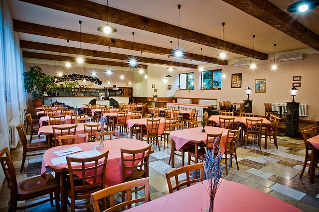

Go back to Home Page
Have It Catered is a food catering business that specialises in snack gift packages while also offering the best catering services in Nairobi, Kenya. We serve fresh, homemade and healthy breakfast snacks for our clients. There are packages tuned to suit both the needs of individual and our corporate clients.
Our services also cater for events such as birthdays, baby showers, dinner dates and other meetings of up to 30 people. Have It Catered is an online based food delivery service. Delivery charges do apply.